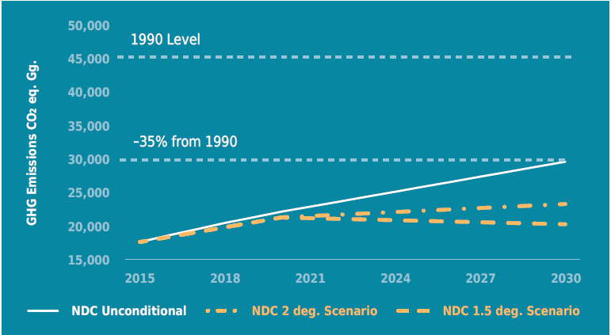
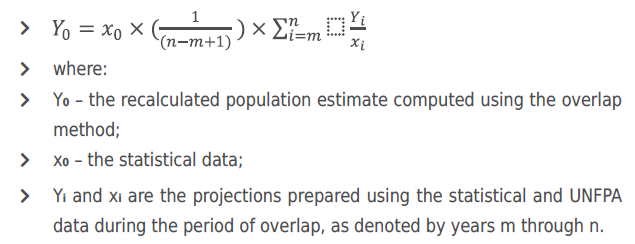

In accordance with the decision 1/CP.21 paragraph 24 of UNFCCC COP 21, Georgia is pleased to communicate its updated Nationally Determined Contribution (NDC), as well as additional information to facilitate the clarity, transparency, and understanding of the contribution pursuant to the decision 4/CMA.1 in the frame of the COP 24.
The goal of nationally determined contribution of Georgia is to support the sustainable and balanced development of the country, equally taking into consideration climate change, environmental and socio-economic challenges. The nationally determined contribution of Georgia is as follows:
Georgia is fully committed1 to an unconditional limiting target of 35 % below 1990 level of its domestic total greenhouse gas emissions by 2030;2
Georgia is committed to a target of 50-57% of its total greenhouse gas emissions by 2030 compared to 1990, in case of international support. If the world will follow 2oC average global temperature increase holding scenario, reduction of emissions by 50% will be necessary while in case of limiting increase to 1.5oC, it will be necessary to reduce emissions by 57% compared to 1990 level;
The updated NDC of Georgia sets 2030 Climate Change Strategy and Action Plan for the determination of mitigation measures contributing achievement of unconditional and conditional commitments and mitigation targets;
Georgia is committed to continue studying its adaptive capacity of different economic sectors to the negative effects of climate change, as well as to plan and implement the respective adaptation measures by mobilising domestic and international resources for the sectors particularly vulnerable to climate change.
Figure 1. Nationally Determined Contribution Targets

Georgia has determined the next decade, between 1st January 2021 and 31st December 2030, to be the timeframe for the implementation of the country’s Nationally Determined Contribution.
Pursuant to paragraph 1 of the Nationally Determined Contribution of Georgia, the updated reference approach considers the level of anthropogenic emissions by sources of greenhouse gases estimated for the year of 1990;
Total national greenhouse gas emissions in 19903 may be recalculated periodically in case of methodological improvements under the Biennial Transparency Report.
The emission limitation targets include and are based on the analysis of seven economic sectors such as transport, buildings, energy generation and transmission, agriculture, industry, waste, and forestry;4
In the National Greenhouse Gas Inventory Georgia plans to continue, as far as possible, recording the greenhouse gases not regulated by the Montreal Protocol5, including carbon dioxide (CO2e), methane (CH4), nitrous oxide (N2), perfluorocarbons (PFCs), hydrofluorocarbons (HFCs), sulphur hexafluoride (SF6), and nitrogen trifluoride (NF3);
Georgia plans to continue, as far as possible, recording carbon storages of managed forests and soil from the following sources: above ground biomass, below ground biomass, litter, deadwood and soil organic carbon;
Adaptation to adverse effects of climate change covers the most vulnerable sectors of the economy, ecosystems and other natural resources:6 mountain ecosystems, Black Sea coastal zone, tourism, agriculture, surface and ground water resources, forestry and biodiversity;
The observation of the impacts of extreme weather events on Georgia’s population, induced by the climate change during the last decades, reveals the following vulnerable groups requiring urgent adaptation measures: children and adolescents, women, elderly persons, persons with disabilities, persons with chronic diseases, and eco-migrants displaced as a result of disasters caused by climate change or those, who are threatened to be eco migrated due to the climate change.
In 2015, total national greenhouse gas emissions (excluding those from land use, land-use change and forestry) accounted approximately 39% of emissions recorded in 1990;
Georgia’s updated unconditional target limits national greenhouse gas emissions average annual growth rate approximately to 3.0% instead of 5.7% that was estimated for the last decade under the Fourth National Greenhouse Gas Inventory Report;
With its updated NDC Georgia sets more ambitious targets that exceed its precedent NDC targets by 7% (unconditional) and 10-17% (conditional), respectively;
With its updated NDC, Georgia takes a commitment to fairly contributing to the global efforts against climate change, taking into consideration national circumstances, resources and capacities. Georgia recognizes that it is vital for the world society to share the required efforts against global warming in a fair and equitable manner.
Since 1994, Georgia has been a Non-Annex I Party to the United Nations Framework Convention on Climate Change (UNFCCC). In 1999 Georgia accessed the Kyoto Protocol, in 2017 approved to the Parisn Agreement and in 2020 accessed the Doha’s Amendment to Kyoto Protocol;
The Article 51 of the Law of Georgia on Environmental Protection determines the general national approaches to the protection of climate from global changes, and Article 53 of the Law of Georgia on Protection of Ambient Air is covering climate change governance matters;
The Ministry of Environmental Protection and Agriculture of Georgia is mandated to coordinate the implementation of national climate change policy and determine Georgia’s positions for international climate change negotiations under the United Nations Framework Convention on Climate Change;
For effective implementation of the climate change policy, Georgia is committed to operate the governmental Climate Change Council established by the decree #54 of the Government of Georgia dated 23rd of January 2020;
The Ministry of Environmental Protection and Agriculture of Georgia and the Ministry of Economy and Sustainable Development of Georgia are jointly responsible for coordinating climate and sustainable energy-related activities at a local level for the Covenant of Mayors signatory municipalities;
Georgia recognizes the substantial role of municipalities in the achievement of the NDC and for joint development of 2030 Sustainable Energy and Climate Action Plans invites all parties at the municipal level, who will be a member of the EU Initiative - Covenant of Mayors for Climate and Energy by the year of 2024.
Georgia acknowledges the importance of ongoing economic development dynamics of the country from the standpoint of updating the NDC document;
The updated NDC envisages that on the basis of a small, open and transitional market economy, Georgia is a developing country with upper-middle income level (World bank Group, 2019). In 2019, GDP per capita amounted to USD 4,764 (GeoStat, 2020), while the annual (real) GDP growth accounted for 4.7% in 2000-2019;
The updated NDC envisages that the foreign trade turnover (only goods) amounts to approximately 75% of GDP, although the country’s international position is not desirable, since import rates are significantly higher than export rates. By 2019, the most volatile macroeconomic variable – Foreign Direct Investments (FDI) –amounted to around 1,311 million USD (GeoStat, 2020). The main climate-related macroeconomic variables are summarized below (see Table 1);
Table 1. Main Macroeconomic Statistics of Georgia| Variable/Year 2005 | 2010 | 2014 | 2015 | 2016 | 2017 | 2018 | 2019 | |
|---|---|---|---|---|---|---|---|---|
| Real GDP, mln GEL* | 26 641 | 32 938 | 33 935 | 34 921 | 36 613 | 38 386 | 40 298 | |
| Real GDP growth, %* | 7.4 | 4.4 | 3.0 | 2.9 | 4.8 | 4.8 | 5.0 | |
| Population, thousand* | 3 917 | 3 800 | 3 717 | 3 722 | 3 729 | 3 726 | 3 730 | 3 724 |
| GHG emissions, gg CO2 equivalent** | 11 168 | 13 688 | 16 861 | 18 214 | 18 534 | 17 766 | N/A | N/A |
| Total capital formation, mln GEL* | N/A | 4 479 | 7 907 | 8 923 | 10 805 | 11 124 | 12 543 | 12 460 |
| Foreign direct investments, mln USD* | 453 | 866 | 1 837 | 1 729 | 1 653 | 1 978 | 1 306 | 1 311 |
Sources: * The National Statistics Office of Georgia; ** Georgia’s Second Biennial Update Report.
Georgia’s updated NDC also envisages that the service sector is dominant in the Georgian economy and its share amounts to 69% in total economic activities. The shares of industry and agriculture in the total economic activities are approximately 23% and 8%, respectively; Given that the average growth rate of the greenhouse gas emissions has been around 4.3% over the past 18 years, Georgia’s updated Nationally Determined Contribution emphasizes a number of factors that affect the country’s greenhouse gas emissions, such as Gross Domestic Product (GDP) real growth rate, demographic situation, investments, prices in the energy sector, technological progress, energy consumption, behavior and attitudes, and so forth. The real GDP growth and energy consumption are key drivers of greenhouse gas emissions in Georgia;
Georgia notes that due to several reasons, including economic recessions, institutional instabilities, external factors (global crises, trade embargo, economic crises in neighboring countries, energy price shocks, etc.), the trend of the country’s greenhouse gas emission is not stable and is characterized by high volatility;
Georgia acknowledges that there is a high correlation between emission-intensive activities (transport, energy supply, agriculture, et.c) and the real GDP. The rate of Emission-intensive economic activities has been gradually growing over the last decade. The average growth rate of such activities makes 3.6%, which is lower than the GDP growth rate (4.7%) (see Table 2).
Figure 2. Real GDP and Economic Activities
Source: National Statistics Office of Georgia
Georgia’s updated NDC takes into account the current dynamics of Georgia’s population (Annex 7.3) and assumes that by 2030 country’s population will amount to approximately 3.9 million;
Georgia’s updated NDC acknowledges that vulnerable groups listed in paragraph 12, in the conditions of scarcity of vital resources are likely to face some of the most immediate threats of climate change;
Georgia, within the framework of national adaptation plan, commits to identify the needs of children and women and set priorities within the climate change adaptation measures;
Georgia’s updated NDC recognizes the importance of public participation and awareness raising on climate change mitigation and adaptation process and plans to implement the respective measures;
Georgia’s updated NDC envisages the role of the youth in the process of fighting against climate change and invites all national stakeholders for cooperation to provide climate change-related education for children and youth, as well as for organising the awareness raising events and trainings;
Under the Fifth National Communication to the United Nations Framework Convention on Climate Change, Georgia is committed to identify the most vulnerable populated areas in the country with a threat of displacement due to climate change. In addition, Georgia invites international partners to work together on the development of protection programmes for children and their families, who are forced to relocate as a result of natural disasters or crisis induced by climate change;
Georgia’s updated NDC acknowledges the needs of particular knowledge, resources, and services for the persons with a disability to effectively respond to climate change;
Georgia’s updated NDC calls on stakeholders on national and international level to design educational programmes for the persons with a disability with consideration of country-specific peculiarities;
Under the Fifth National Communication to the United Nations Framework Convention on Climate Change, Georgia is committed to identify the areas affected by frequent floods as a result of climate change and calls on international partners to develop protection programmes for vulnerable communities at risk of infectious waterborne disease;
Georgia encourages the development of programmes that will study climate change as an additional morbidity risk factor for the spread of chronic and epidemic diseases;
Under its upcoming National Communications Georgia is committed to study the impact dynamics of extreme heat, flooding, and hurricanes on medical delivery systems and healthcare in the country.
Georgia’s updated NDC highlights the vulnerability of mountainous areas, given the fact that most of the country’ mountainous areas, especially those with the elevation of 1,000 meters and above sealevel, are greatly affected by extreme weather and related geological events;
Due to the changed climatic parameters and extreme weather conditions for the past several decades, Georgia emphasizes that the country’s coastal zone is characterized by high vulnerability to climate change;
Georgia also draws attention to the fact that 43.5% of the country’s territory is covered by forests and aims to maintain and increase the GHG absorption and adaptation capacities of the forests.
In the light of information provided in the National Communications of the country, Georgia’s updated NDC underlines that average temperature is characterized by an increasing trend in most of the regions of the country for the past several decades and produces high-risk changes both in climatic and agricultural zones.
Georgia is fully committed to develop and operationalize the procedures and database for the archive system of the national anthropogenic emissions by national sources and removals by sinks of greenhouse gases by 2024;
Georgia aims at developing the country-specific emission factors and activity data, where available, in order to address the recommended methods (tier levels) for the key source categories in accordance with the IPCC 2006 guidelines;
Georgia recognizes the national circumstances, specifically absence of relevant historical data necessary for utilization of higher tier methodologies, and intends to use the splicing techniques suggested by the IPCC guidelines under the national inventory reports of anthropogenic emissions by sources and removals by sinks of greenhouse gases, in order to ensure consistent time series and estimate missing emission values resulting from lack of activity data, emission factors or other parameters;
Georgia is fully committed to develop QA as well as general and category-specific QC procedures for the estimation of levels of domestic anthropogenic emissions by sources and removals by sinks of greenhouse gases by 2024;
Georgia is fully committed to adopt application procedures for verification techniques for the domestic anthropogenic emissions by sources and removals by sinks of greenhouse gases and operationalize them via the national inventory reports of anthropogenic emissions by sources and removals by sinks of greenhouse gases by 2024;
For the reporting year Georgia intends to report information on precursor greenhouse gases such as carbon monoxide (CO), nitrogen oxides and non-methane volatile organic compounds (NMVOCs), as well as sulphur oxides consistent with the air pollution emission inventory of Georgia.
Georgia has identified the level of its greenhouse gas target limits by assessing the feasible targets for mitigation in each sector. To achieve the goal set out in NDC , following sectoral targets should be adopted as the goals of Georgia’s 2030 Climate Strategy and Action Plan:
By 2030, Georgia plans to mitigate the GHG emissions from the transport sector by 15% from the reference level;
Georgia’s updated NDC supports the development of low carbon approaches in the building sector, including public and touristic buildings through encouraging the climate-goals oriented energy efficient technologies and services;
By 2030 Georgia plans to mitigate the GHG emissions from energy generation and transmission sector by 15% from the reference level;
Georgia’s updated NDC supports the low carbon development approaches of the agriculture sector through encouraging the climate smart agriculture and agritourism;
Georgia’s updated NDC supports the low carbon development of the industry sector through encouraging the climate-friendly innovative technologies and services, in order to achieve 5% of emission limitations comparing to emissions projected by the reference scenario;
Georgia’s updated NDC supports the low carbon development of the waste sector through encouraging the climate-friendly innovative technologies and services and through effective implementation of separation practice and principles of circular economy;
By 2030 Georgia intends to increase the carbon capturing capacity through the forestry sector by 10% compared to 2015 level;
Georgia’s updated NDC sets implementation period for Climate Change Strategy and Action Plan between 2021 and 2030 through identification of individual mitigation measures contributing to achievement of the sectoral goals.
Georgia has identified the following adaptation measures to be adopted as part of the National Adaptation Plan to achieve the goal set out in Nationally Determined Contribution:
Georgia intends to assess the impact of climate change on coastal zone, mountain ecosystems and ecosystem services. In addition, Georgia intends to study the impact of climate change on glaciers, economic situation of the mountainous and coastal regions and livelihoods of the local population for the sustainable management of these regions;
Georgia intends to develop adaptive capacity of the most vulnerable winter and coastal resorts;
Georgia intends to assess and develop adaptive capacities for the agricultural productions that have the largest share in national GDP (e.g. grape, hazelnut, tangerine) and/or for domestic unique products (such as Georgian honey, non-timber forest products). This process will be implemented in accordance with assessing changes of climatic parameters and spread of infections in order to be ensured conservation of species and food security;
Georgia intends to assess the impact of climate change on the availability of groundwater and surface water resources for sustainable use in agricultural (irrigation), energy production and dwelling purposes in a long-term perspective;
Georgia intends to encourage the conservation of the species that are endemic, protected under the Red List, as well as indigenous species with a significant importance for food and agriculture;
Georgia intends to study the most vulnerable areas of forest lands at the preselected territories;
Georgia intends to assess the effects of climate change on human health through the interdisciplinary study of the relationships between social, economic, biological, ecological and physical systems;
Georgia intends to facilitate the measures supporting the reduction of losses and damages caused by extreme weather events.
Georgia’s updated NDC is in compliance with Article 11 of the Constitution of Georgia on the right to equality, Law of Georgia on Gender Equality, Decision 21/CP.22 on Gender and Climate Change, and Enhanced Lima work programme on gender and its gender action plan;
Georgia’s updated NDC acknowledges the nationalization of targets 5.1-5.6, 5.a, and 5.b of Sustainable Development Goal 5 on the achievement of gender equality and empowerment all women and girls;
Given that the majority of teachers at primary and secondary schools, 58%7 of lecturers at universities, and 65%8 of doctors are women, Georgia intends empowering women as agents of change through involving them in decision-making processes addressing healthcare issues induced by climate change and related to the activities and programs, such as awareness raising on climate change, capacitybuilding and knowledge-sharing aiming at changing behavior;
Georgia further considers to empower women as agents of change through their participation in decision-making processes related to energy efficiency measures and efficient use of water resources in households;
Georgia’s updated NDC invites all stakeholders and relevant domestic organisations to provide adaptation resources channeled towards women wherever their vulnerability level is high;
Georgia’s updated NDC intends to collect, manage, report and archive the information on gender-disaggregated relevant data in its national reports related to the greenhouse gas mitigation and climate change adaptation. In addition, Georgia intends to carry out gender analysis, capacity building and knowledge sharing within climate-related projects.
Paragraph 12 of Georgia’s updated NDC identifies the vulnerable groups of the country. For taking into consideration the particular interests, needs, capabilities, roles and responsibilities of the key stakeholders, especially the vulnerable groups, the meetings with vulnerable groups and civic organizations working on climate change and gender issues have been conducted during the process of updating the document.
The Government of Georgia has established a governmental advisory body - the Climate Change Council - for implementing and tracking the updated Nationally Determined Contribution. The Council represents an instrument for ensuring transparency in climate policy implementation in order to achieve the emission targets set out in this document.
Georgia is going to report a greenhouse gas inventory pursuant to the decision 18/CMA.1 and report on progress towards its Nationally Determined Contribution in accordance to 4/CMA.1 until 31 December 2024.
Georgia continues to use 2006 IPCC Guidelines for National Greenhouse Gas Inventories and 2013 Supplement to the 2006 IPCC Guidelines for National Greenhouse Gas Inventories: Wetlands, for estimating greenhouse gas emissions and removals. The sectoral targets for mitigation stated in the updated NDC follows the assumptions and methodologies used by the Climate Strategy and Action Plan. The EX-Ante Carbon-balance Tool version 7 has been applied for mitigation targets setting in the Forest sector. The LEAP has been applied for estimation of the greenhouse gas (CO2, CH4, and N2O) emission limitations in energy related sectors.
As of January 1, 2020, the population of Georgia was 3.7 million,9 of which 2.2 million (59%) lived in urban areas and 1.5 million (41%) lived in rural areas (Geostat, 2020). In general, the population of Georgia decreased by approximately 32% between 1993 and 2014. The same downward trend has been recorded for the urban and rural population. Particularly, the urban population has decreased by 27%, while the decreasing trend for rural population was significantly higher approximately 31.7% for the same 21 years period. The migration is considered as one of the main causes for the decrease of Georgia’s population by ¼. Additionally, the urbanization processes in the country keeps the people migration rate relatively high in villages of Georgia.
The projections for population growth up to 2030 have been provided by analysis of trends of population changes in Georgia (Geostat, 2020) since the year of 1990 and the studies provided by the United Nations Population Fund (UNFPA, 2015). The main drivers for projecting future population growth up to 2030 are total fertility rate and growth rate offered by UNFPA. The drives and key assumptions are outlined below:

In 2015 the national Greenhouse Gas Inventory Report was published under Georgia’s Second Biennial Update Report. Pursuant to the report uncertainty of the greenhouse gas emissions’ trend is ±13.26%. The uncertainty analysis is conducted in accordance with the Decision 20 / CP.7 and its basic method is described in the IPCC 2006 guidelines.
In the preparation of the National Greenhouse Gas Inventory document, improvements in the emissions estimates are taken into account and uncertainty trend is considered to be improved approximately by 8.5% that is in accordance with +4.731% interval uncertainty trend.
Positive significance of the uncertainty trend is considered for the development of unconditional commitment of updated NDC while prognosis of the conditional commitment are based on 2oC and 1,5oC temperature increase scenarios of the IPCC assessment reports.
Sectoral targets until 2030 are set by calculating projection scenarios of greenhouse gas emissions that are based on Georgia’s Updated second Biennial Report (BUR) published in 2019 and Georgia’s recent National Greenhouse Gas Inventory Reports. LEAP model has been used as a comprehensive platform for gathering and calibration of the data from every individual sector (except Land Use, Land-Use Change and Forestry (LULUCF)). Data of the Forestry sector was evaluated by using the FAO EXACT model.
The commitment does not cover Abkhazia and Tskhinvali Region of Georgia, since these are the temporarily occupied territories and the Government of Georgia has no effective control over them.↩︎
Such reduction is approximately equal to reducing the aggregate GHG emissions by 16% per capita.↩︎
In case of recalculation all following years are also subject to update in accordance with the time series consistency principle.↩︎
The emission limitations/removals from the categories of land use, land use change and forestry is excluded from the projections until the statistical data of the land category changes will be designed, except the firewood consumption↩︎
Montreal Protocol - United Nations Agreement on Ozone Depleting Substances↩︎
Source: Georgia’s Third National Communication on Climate Change to the UNFCCC.↩︎
National Statistics Office of Georgia, 2018 ↩︎
National Statistics Office of Georgia, 2018 ↩︎
The data does not cover the occupied territories of Georgia ↩︎